Background
The Che Café is a historic social "DIY Space" and iconic music venue at UCSD, established in 1980 as an autonomous and volunteer-run space dedicated to promoting radical politics, music, culture and community engagement.
The Che Café has faced challenges over the years, including financial difficulties and threats of eviction, but its dedicated community of volunteers and concert-goers have worked tirelessly to keep the space alive and continue its mission of providing a platform for activism, art, and social change.
The Challenge
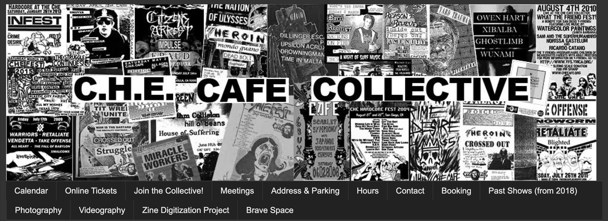
IBM holds design jams, where stakeholders across product teams cross-collaborate on singular areas of inconsistency in the design system.
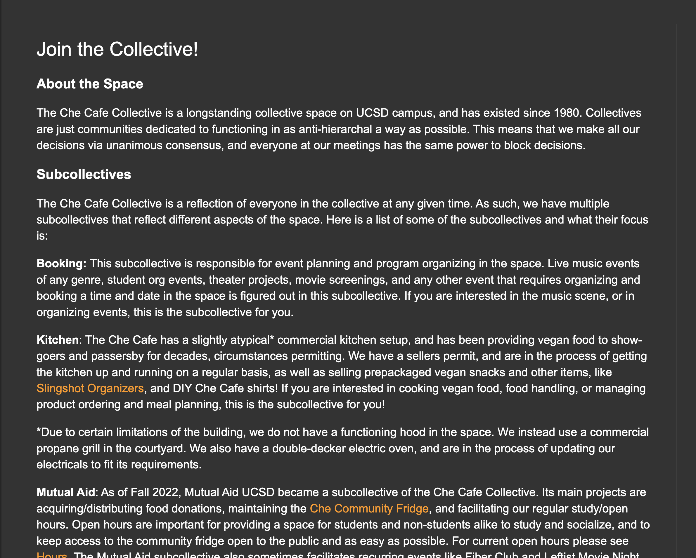
IBM holds design jams, where stakeholders across product teams cross-collaborate on singular areas of inconsistency in the design system.
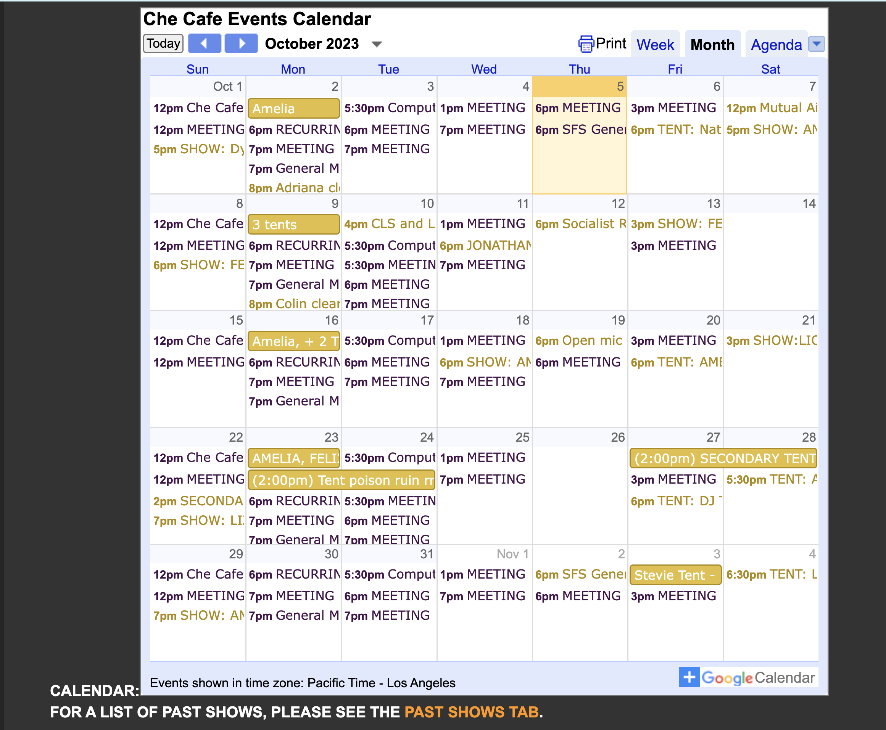
IBM holds design jams, where stakeholders across product teams cross-collaborate on singular areas of inconsistency in the design system.
After connecting with our client, we learned more about the Che's past challenges, present offerings, and future goals, and devised a set of objectives to prioritize for the new website:
-
Improve information hierarchy and site architecture
Though the primary audience is centered around parents,the app is targeted at any person facing the diagnosis of a loved one, from grandparents to young care-givers.
- Reflect personal branding through brighter colors, images, and videos
For those who may not have access to a local support system, are too overwhelmed to actively seek support, or for more experienced families that want to reach out to others, users can greatly benefit from listening to other peoples’ stories and sharing their own journey.
- Attract more volunteers
Many parents are forced to become nurses and doctors, constanty monitoring their children's behavior.
This added role on top of being a parent can create cause constant stress, fear, and anxiety and it is essential to provide resources or tools that can help ease this burden.
- Promote the Che Cafe's DIY nature, mission, and values
Many parents are forced to become nurses and doctors, constanty monitoring their children's behavior.
This added role on top of being a parent can create cause constant stress, fear, and anxiety and it is essential to provide resources or tools that can help ease this burden.
Research
- Competitive Analysis
Given the broad nature of our problem space, we performed an exhaustive competitive analysis of over 20 related products, spanning community, hospital care, and treatment provision.
| Category |
Competitors |
Strengths |
| Community |
CoHeals, Caring Bridge, Cancer Buddy, Twill Care etc. |
- Diverse post formats
- Localized events and groups
- Emotional support and resource-sharing
- Private and specialized communities
|
| Hospital |
COGS Kids Care, Abridge,
MY MSK |
- Privacy and security
- Identity verification
- Emergency information access
- Provider messaging
|
| Treatment |
ChemoWave, CircleOf, Outcomes4me |
- Medication and symptom tracking
- Appointment management
- Note-taking
- Personalized reminders
|
The glaring pattern that we noticed was that there was no product on the market that offered a central hub for
- User Interviews
The Che Café's unique role as a community space and all-ages event venue attracts a diverse range of users. To help narrow down our target audience, we interviewed 11 Che Café visitors across a selection of events and times, from daytime study hours to nighttime indie concerts.
- Personas

Salesforce’s governance system involves collaboration between centralized, federated, and solitary teams, creating a cyclical model that enables constant research, testing, and updating of the design system.

IBM holds design jams, where stakeholders across product teams cross-collaborate on singular areas of inconsistency in the design system.

Salesforce’s governance system involves collaboration between centralized, federated, and solitary teams, creating a cyclical model that enables constant research, testing, and updating of the design system.
So, our solution evolved into...
Project 1095, a centralized support system for the pediatric cancer journey
Our goal is to help parents and loved ones navigate diagnosis, treatment, and recovery with a safe community and emotional support , accessible resources for learning and sharing information, and convenient tools to keep track of medications and appointments.
Prototyping
- Ideation and Wireframes
Combining the existing website with our priority list, we mapped out the new site architecture to help guide navigation and our design decisions. One particular challenge was condensing the original 13 tabs into 7 tabs with corresponding sub-categories. We put this site achitecture into practice by creating wireframes, utilizing a mobile-first approach.
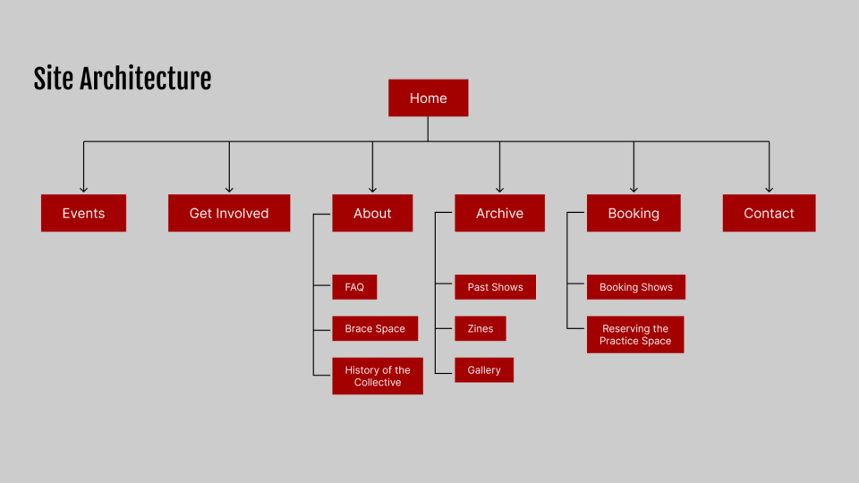
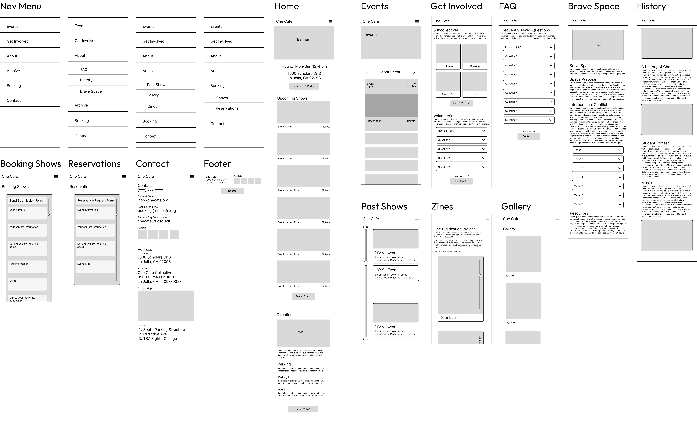
- Moodboard
We went back and forth with our client regarding the color scheme, as they originally wanted to use muted grey and greens to represent balance and serenity.
However, we suggested a more vibrant color scheme, and after validating our choice with users, our final design system uses blue as a primary color for its calming connotation and alignment with Roc Solid’s current brand colors, and pairs it with bright secondary colors to represent hope, energy, and strength.
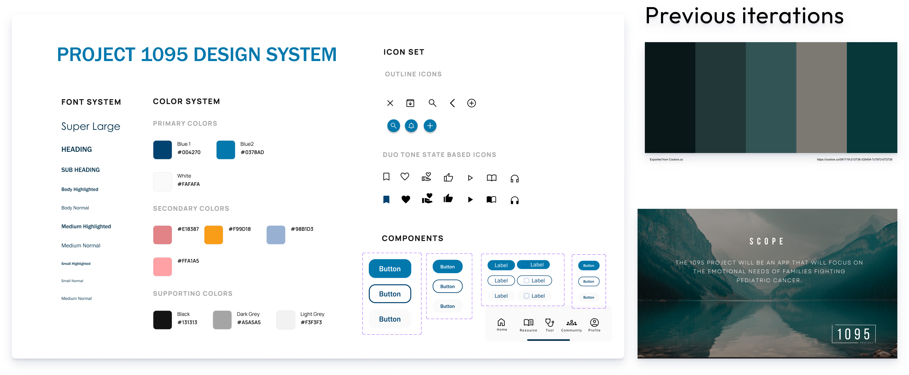
- Usability Testing
As we developed our wireframes into lo-fi prototypes, we met consistently with our client to make sure that we were on the same page. As we transitioned towards hi-fi prototypes, we went beyond our client perspective and conducted usability testing with 4 users to identify any blindspots or room for improvement.
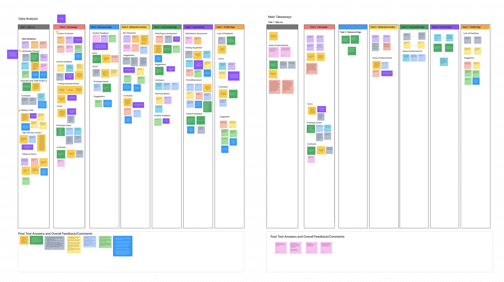
- Iterations and Improvements
Homepage
7/18 users were unclear on the purpose of the app from the onboarding process and wanted more initial transparency on what the app was supposed to provide, and how it intended to securely use the information provided by the user
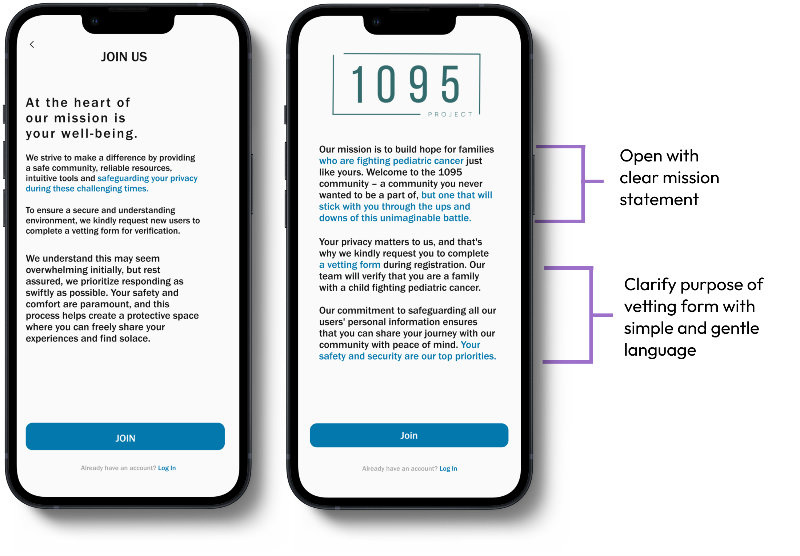
Get Involved
8/18 users experienced confusion on various tasks due to unclear icons and wording. Users cited issues such as confusion about the tonal connotation of Resource categories such as “Tips and Tricks” or sensitivity around the idea of sharing "progress
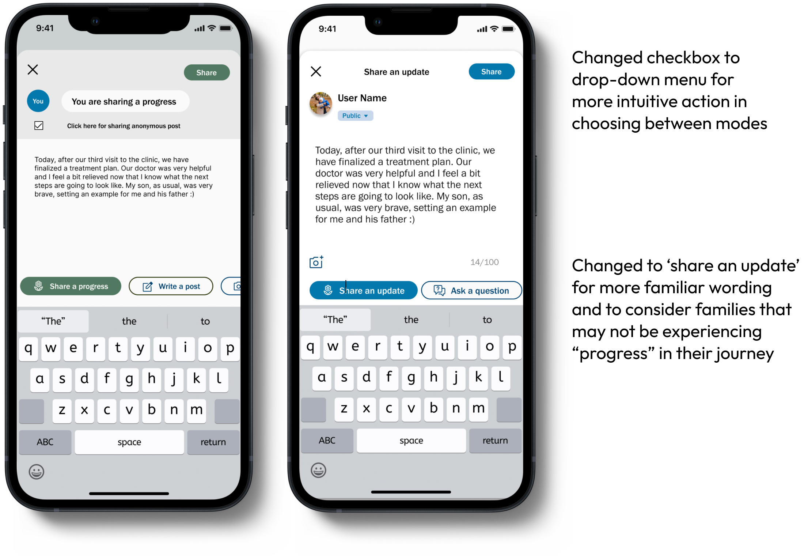
Events
8/18 users had issues reading or finding information due to a lack of readability.
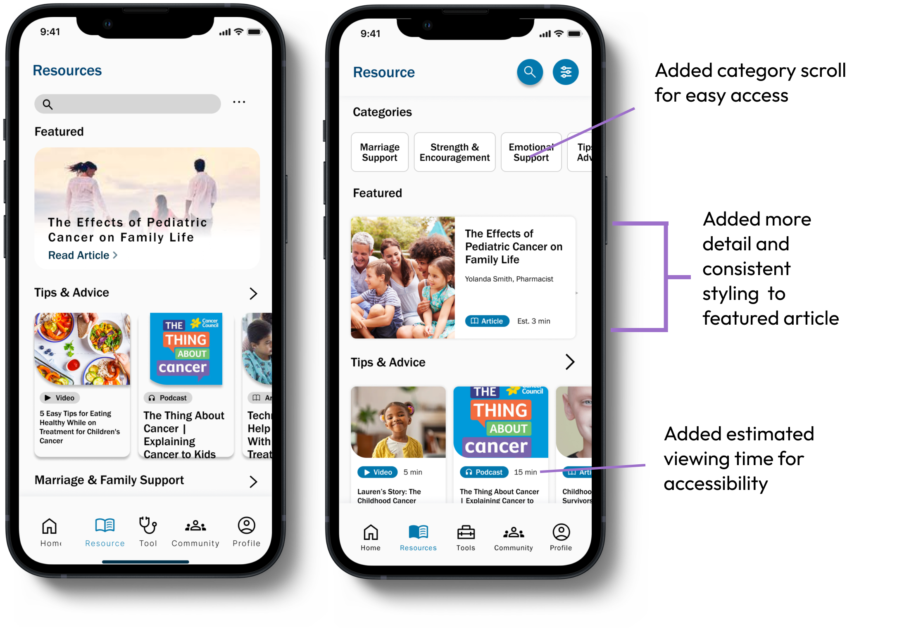
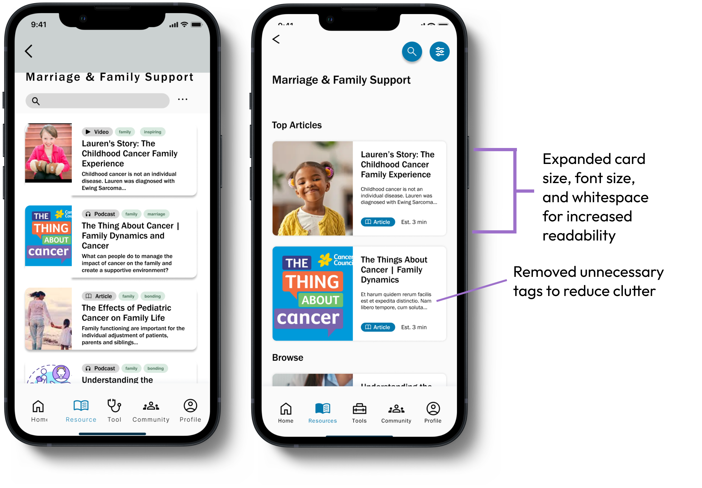
Navigation
9/18 users had issues with the medication tracker feature on the “Tools” page. and requeste that more detailed information and functionality be provided.

Final Product
View our hi-fi prototype
Results
After creating our hi-fi deliverables, 4/4 of our last round of tested users, real parents from Roc Solid Foundation, reacted positively to the app and found it to be impactful, simple, and user-friendly.
Our client was extremely happy with the final product, and we have completed the development hand-off. Our team currently plays a role of design consultants as Roc Solid prepares for next steps with our prototype.
What I Learned
Communication and clarity lead to client satisfaction
During the early phases of the project, we hit some roadblocks due to multiple levels of miscommunication on the timeline and scope of deliverables. Being transparent with the client about feasibility, working through solutions together, and involving them in every step of the design process creates a connection a deeper level and helped set clear expectations.
How to practice empathy on a nuanced level
Working with such an intense subject as pediatric cancer and the diversity of those it affects has helped me understand the utmost importance of examining users through an empathetic lens. Seemingly minute details can make all the difference in a user's experience, and it is crucial to approach a contextual situation from all angles.